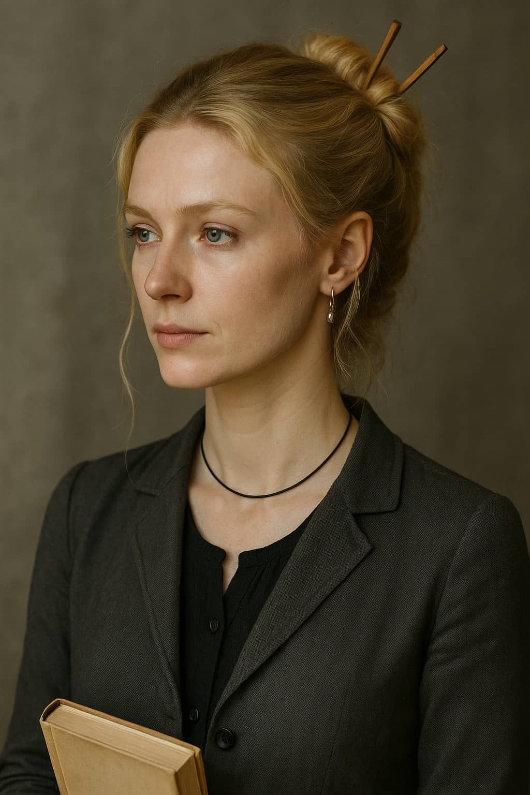

Del 9
BRÅKET
När hon rundade ett hörn och kikade fram såg hon dem: Jonathan, stel och blek. Vera, med armarna korsade över bröstet, ögonen vassa och vaksamma. Och Camilla, som stod närmast, med kroppen spänd som en fjäder.
Bråket var redan igång.
"Du ljög för mig!" skrek Camilla åt Jonathan, rösten sprucken av raseri och desperation.
"Det var aldrig meningen att du skulle få veta!" fräste Jonathan tillbaka.
Vera backade ett steg men sa inget. Hon kastade snabba blickar mellan dem, som om hon letade efter en väg ut. Mia såg hur Camillas hand for ner mot sidan av hennes jacka - mot vapnet.
Nej, nej, nej! tänkte Mia och rusade fram.
"Camilla!" skrek Mia.
Alla tre vände sig mot henne i en enda rörelse. Camillas ögon var glödande av ilska. Vapnet i hennes hand blänkte till som en varning, kallt och skoningslöst i månljuset. Det låg en stillhet över plattformen som inte hörde hemma där, som om världen höll andan inför det som höll på att ske.
"Camilla, snälla!" ropade Mia igen, nu bara några meter bort. "Det här är inte du!"
Jonathan stod några steg bort, ögonen vida, händerna halvvägs upp som för att mota bort stormen som var Camilla. Han visste att varje ord han sa nu kunde bli hans sista. Vera stod bakom honom, stel och tyst som en skugga. Hennes blick var vaksam, som om hon redan börjat söka flyktvägar i sitt huvud.
"Du tror att du kan gömma dig bakom tystnad?" Camillas röst var raspig, som sliten glasfiber. "Efter allt du gjort mot mig... mot oss?"
"Camilla," sa Jonathan, mjukt, nästan bedjande. "Jag har gjort misstag. Jag vet det. Men du behöver inte—"
"Misstag?" Hon skrattade. "Är det så du kallar att dra in en annan kvinna till vårt hotellrum medan jag var iväg med jobbet?"
Vera vred på sig, som om orden sved på huden.

Mia hade stannat i utkanten, hjärtat slog i halsgropen. Hon såg hur Camilla andades häftigt, som en varelse driven till bristningsgränsen. Det var inte bara svartsjuka i hennes ansikte, det var något mer som en sorts gammal smärta som kokat så länge att den förlorat form. Månens bleka ljus strömmade ner över dem, kastade långa, oroliga skuggor över plattformen. Vattnet nedanför låg mörkt och spegelblankt, som om det väntade på något.
"Du visste exakt vad du gjorde," sa Camilla. Vera svarade inte. Hon stod orörlig, men ögonen flackade.
Jonathan tog ett steg framåt. "Camilla, lyssna. Det var mitt fel. Jag släppte in henne. Jag bar det här, inte hon. Om du vill något, ta det med mig."
Camilla vände långsamt blicken mot honom, och där i det korta ögonblicket föll en stillhet över platsen, en tryckande tystnad som verkade svälla i bröstkorgen på dem alla.
Camilla rörde sig inte hastigt, inte som en attack, utan en tyst rörelse. Något i henne släppte taget. Vapnet höjdes i en enda, ryckig rörelse. Siktet låg på Vera. Det var tydligt. Blicken var fäst, blicken var målmedveten, nästan smärtsamt stilla.
Ett vindpust for över kajen. Plötsligt var allt i rörelse. Jonathan kastade sig framåt och skrek hennes namn. Hans röst bar panik, men också något djupare - en sista vädjan, en förtvivlan över att förstå för sent. Han kastade sig fram, grep tag i hennes arm. Camilla snubblade till av rycket. Just då tog Vera chansen och smet snabbt förbi samtidigt som Camilla svingade med ett vasst vapen som plötsligt tog stopp.

Jonathan
Hans kropp hade hamnat precis i farozonen. Han hade försökt hindra henne, styra bort henne från Vera, men i rörelsen hade han själv hamnat i fällan.
Han tappade fotfästet, det var som om kroppen själv gav upp, han vacklade bakåt, försökte fånga balansen, men det fanns inget kvar att stå på. Som om hans fötter plötsligt inte förstod var marken tog slut. För en stund var han viktlös, sedan föll han baklänges. I fallet slog han huvudet mot stenarna och direkt därefter kom plasket. Vattnet skvätte upp i tunna strålar som glittrade till i månljuset. Ljudet ekade, förvrängt, mot kajens kalla väggar.
Mia skrek.
Camilla stelnade till, andan fastfrusen i bröstet.
Vera rusade mot kanten, grep tag i räcket.
Mia sprang fram och kikade över kanten. Nere i det mörka vattnet spred sig röd färg långsamt som bläck i ett glas.
Camilla tog ett steg framåt, som om hon drömde. Hon sa ingenting. Hennes hand hängde längs sidan. Föremålet i den glänste svagt innan det föll ur hennes grepp, slog mot metallen och försvann ljudlöst ner i mörkret.
"Det var inte meningen," viskade hon, men rösten bar inte längre.
Vera föll ner på knä vid plattformens kant, händerna för ansiktet.
Mia kände en tomhet dra genom kroppen som en vind. Hon visste inte vad som hänt exakt, inte hur eller varför. Bara att det var över.
Camilla stod där fortfarande, stilla som en staty, blicken fäst vid det mörka vattnet.
Och under dem, där vågorna nu försiktigt slog mot stenarna, låg sanningen omöjlig att dölja, oändligt svår att förstå.